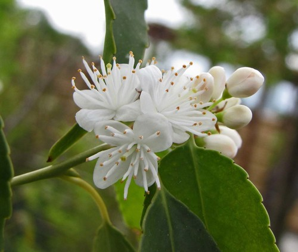

Symplocaceae
Sweetleaf Family
Symplocaceae, the sweetleaf family, consists almost entirely of the large genus Symplocos, comprising trees and shrubs found in tropical and subtropical regions. They are notable for often accumulating aluminum, causing leaves to dry a yellowish color, and for their usually white or yellow flowers with numerous stamens and an inferior ovary.
Overview
Symplocaceae is a family of flowering plants placed in the order Ericales, alongside families like Ericaceae (heaths), Styracaceae (storax), and Theaceae (tea). The family is dominated by the single genus Symplocos, which contains around 320 species, although historically a second genus, Cordyloblaste, was sometimes recognized.
Members of Symplocaceae are distributed widely across tropical and subtropical regions of Asia, the Americas, and Australia, with a few species extending into temperate zones. They are typically found in moist forests and cloud forests. A characteristic feature of many species is their ability to accumulate high concentrations of aluminum from the soil, which often causes their leaves to turn yellowish upon drying, a useful diagnostic clue.
Several species are used locally for dyes (derived from the aluminum-rich leaves and bark), timber, or traditional medicine. Some, like Symplocos paniculata, are cultivated as ornamental plants for their attractive flowers and brightly colored fruits.
Quick Facts
- Scientific Name: Symplocaceae
- Common Name: Sweetleaf family
- Number of Genera: 1 (Symplocos)
- Number of Species: Approximately 320
- Distribution: Tropical and subtropical Asia, Americas, Australia; some temperate species
- Evolutionary Group: Eudicots - Asterids - Ericales
Key Characteristics
Growth Form and Habit
Members of the Symplocaceae family are evergreen or deciduous trees and shrubs. They are well-known hyperaccumulators of aluminum, meaning they absorb large amounts of aluminum from the soil. This often results in the leaves drying to a characteristic yellowish color.
Leaves
Leaves are simple, arranged alternately along the stem, and lack stipules (estipulate). Leaf margins are typically serrated or toothed, though sometimes entire. The texture is often leathery. As mentioned, dried leaves frequently turn yellowish due to aluminum accumulation.
Inflorescence
Flowers are borne in axillary (or sometimes terminal) inflorescences, which can be racemes, panicles, spikes, or clusters (fascicles), or flowers may be solitary. Inflorescences are generally relatively compact.
Flowers
Flowers are usually bisexual (rarely unisexual), actinomorphic (radially symmetrical), and often fragrant. They are typically white or yellowish. Key floral characteristics include:
- Calyx: Composed of 5 (rarely 3-4) small lobes, fused at the base, and typically persistent, crowning the fruit.
- Corolla: Composed of 5 (rarely more) petals, usually fused at the base to form a short tube (sympetalous), with spreading lobes.
- Androecium: Stamens are numerous, often 15 or more (ranging up to 100+), and typically fused to the base of the corolla tube (epipetalous), often arranged in bundles. Anthers are small and dehisce via longitudinal slits.
- Gynoecium: A single inferior or half-inferior ovary composed of 2-5 fused carpels. It has 2-5 locules, each containing 2-4 ovules. The style is single and slender, with a small stigma.
Fruits and Seeds
The fruit is a drupe (fleshy fruit with one or more hard stones), typically cylindrical or ovoid in shape. It is characteristically crowned by the persistent calyx lobes. The fruit pulp is often blue, purple, or white when mature, enclosing 1-5 seeds.
Chemical Characteristics
The most notable chemical feature is the hyperaccumulation of aluminum. Many species also contain iridoid glycosides, tannins, and saponins. The presence of aluminum compounds contributes to their use as mordants in dyeing.
Field Identification
Identifying Symplocaceae, essentially the genus Symplocos, relies on recognizing a combination of vegetative and floral traits, especially the leaf characteristics and flower structure.
Primary Identification Features
- Tree or Shrub Habit: Woody plants.
- Alternate, Simple Leaves: Leaves are undivided, arranged one per node, usually with serrated margins.
- Yellowish Dried Leaves: A strong indicator due to aluminum accumulation (check fallen leaves or press a fresh one).
- Actinomorphic Flowers: Radially symmetrical, usually white or yellow.
- Numerous Stamens (>15): Stamens are many and fused to the corolla base.
- Inferior or Half-Inferior Ovary: Ovary located below or partially below the attachment of petals and sepals.
Secondary Identification Features
- Drupe Fruit Crowned by Calyx: Look for fleshy fruits topped by the persistent sepals.
- Estipulate Leaves: No stipules at the base of the petiole.
- Flowers Often Fragrant: Many species have scented flowers.
- Habitat: Often in moist forests or cloud forests.
Seasonal Identification Tips
Different features are prominent seasonally:
- Flowering Season: Usually spring or summer. Look for the characteristic flowers with numerous stamens and inferior/half-inferior ovary.
- Fruiting Season: Late summer into fall/winter. Identify the drupes, often blue or purple, crowned by the persistent calyx.
- All Seasons (Vegetative): The alternate, simple, serrated leaves are always present. The tendency for leaves to dry yellowish is a key year-round clue.
Common Confusion Points
Symplocos species might be confused with:
- Styracaceae (Storax Family): Also in Ericales, similar flowers, but often have stellate hairs (absent in Symplocaceae), fewer stamens (usually 10), and ovary position can be superior to inferior.
- Theaceae (Tea/Camellia Family): Trees/shrubs with alternate simple leaves, but usually have superior ovaries and stamens that are free or only basally connate (not fused high up the corolla). Lack yellowish drying leaves.
- Ericaceae (Heath Family): Very diverse, but many have urn-shaped flowers, different stamen characteristics (often poricidal anthers), and superior ovaries (usually).
- Cornaceae (Dogwood Family): Some have alternate simple leaves, but flower structure (often small flowers in dense heads/cymes, usually 4-merous) and fruit types differ. Typically lack yellowish drying leaves.
- Aquifoliaceae (Holly Family): Alternate simple leaves often with teeth, but flowers are small, usually 4-merous, with superior ovaries and characteristic drupes (often red).
Field Guide Quick Reference
Look For:
- Trees or shrubs
- Alternate, simple leaves (usually serrated)
- Leaves drying yellowish
- Actinomorphic flowers (white/yellow)
- Numerous stamens (>15), epipetalous
- Inferior or half-inferior ovary
- Drupe fruit crowned by calyx
Key Variations:
- Leaf size and shape
- Flower size and fragrance
- Fruit color (blue, purple, white)
- Deciduous vs. Evergreen habit
- Inflorescence type (raceme, panicle, etc.)
Notable Examples
As the family consists almost entirely of the genus Symplocos, examples showcase the diversity within this single genus.

Symplocos tinctoria
Sweetleaf / Horsesugar
A deciduous to semi-evergreen large shrub or small tree native to the southeastern United States. It has fragrant yellow flowers in early spring before the leaves fully emerge. The leaves are somewhat sweet-tasting (hence "Sweetleaf") and readily eaten by horses and cattle ("Horsesugar"). Leaves dry yellowish, and the fruit is an orange-brown drupe.

Symplocos paniculata
Asiatic Sweetleaf / Sapphire Berry
Native to East Asia, this deciduous large shrub or small tree is widely cultivated for its ornamental value. It produces abundant clusters of fragrant white flowers in late spring, followed by striking sapphire-blue drupes in the fall that are attractive to birds. Leaves dry yellowish.

Symplocos stawellii
White Hazelwood
An evergreen tree found in rainforests of eastern Australia and New Guinea. It has relatively large, leathery leaves with toothed margins and produces clusters of white, fragrant flowers followed by blue to purple drupes. Like others, its leaves dry yellowish, and the bark is rich in aluminum.
Phylogeny and Classification
Symplocaceae is firmly positioned within the order Ericales, a major lineage within the Asterid clade of eudicots. Molecular studies consistently show a close relationship between Symplocaceae, Styracaceae, and Diapensiaceae, forming a distinct clade within the Ericales. This group is sister to the remaining core Ericales families.
The family is remarkable for being essentially monogeneric, with the vast majority of species diversity contained within Symplocos. This suggests either a relatively recent radiation within the genus or extinction of other closely related lineages. The broad tropical and subtropical distribution indicates an ancient origin and subsequent diversification across continents.
Position in Plant Phylogeny
- Kingdom: Plantae
- Clade: Angiosperms (Flowering plants)
- Clade: Eudicots
- Clade: Asterids
- Order: Ericales
- Family: Symplocaceae
Evolutionary Significance
Symplocaceae is evolutionarily interesting due to:
- Aluminum Hyperaccumulation: A striking physiological adaptation with ecological implications (defense, soil tolerance) and practical uses (dyes).
- Monogeneric Diversity: Represents a large radiation within a single genus, offering opportunities to study speciation.
- Biogeography: Its wide distribution across disjunct tropical and subtropical regions reflects ancient dispersal patterns.
- Phylogenetic Position: Helps clarify relationships among major families within the large and complex Ericales order.